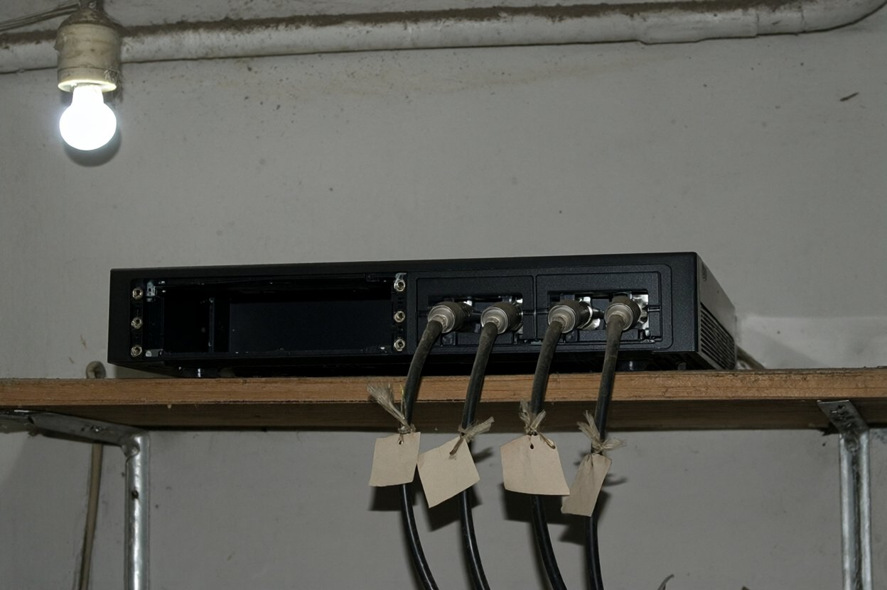

| Місце | б/в «Тиха заводь», Чугуївський р-н: лазня, прибудова-котельня при ресторані, котедж № 3 |
| Огляд | ср 31.10.2007, з 12:30 до 14:00; з дозволу адміністрації |
| Присутні | Шульга В.І.; Марченко Д. (техніка); Людмила Кравець, адміністраторка. Господаря бази не було: поїхав у Чугуїв «по справах» (в Чугуєві), трубку не брав |
Лазня. Кімната відпочинку, годинник «Сонар» над дверима в передбанник. Ден зняв «Сонар» зі стіни (зі стрем'янки, шурупи вручну). За годинником, там, де його закривав корпус, — два свіжі отвори під шурупи, нижче, ніж треба для цього годинника (дерево світле, свіжа тріска). Окремо отвір ≈ 8 мм наскрізь у стіну, в ньому обрізок тонкого кабелю (≈ 4 см, двожильний + тонкий коаксіал). Ден: «Це не пожежний дріт. Пожежний — товстий і червоний».
Кабель. Із зовнішньої сторони стіни до отвору підходить чорна гофра ∅ 16 мм; Ден пішов по ній зовні: уздовж стіни під карнизом, далі вздовж бетонної доріжки (місцями виступає з-під газону, прикрита бордюром), 90 м до ресторану; заходить у тильну стіну прибудови. Прибудова — котельня.
Котельня. Двері на навісному замку. Людмила спершу: «Без хазяїна не відчиню, там Віталієве, ключ у нього». Підвели її до гофри; вона присіла, провела рукою: «Ой, а це що? Віталій казав, що то пожежне…» — і сама пішла по запасний ключ (комод у спальні, коробка з-під цукерок). Відчинила, у двері не заходила. Усередині: твердопаливний котел, дрова, лопата. На полиці над дверима — чорний 4-канальний реєстратор. Відсік під диск — порожній, диска на полиці й поряд нема. Екрана на реєстраторі нема, світяться два діоди. До нього підключено чотири кабелі, на кожному паперова бирка на шпагаті (фото 1). Реєстратор не чіпали, не вимикали, нічого не вилучали.

1 рест2 к33 лазня4 воротаКотедж № 3. Людмила відчинила. На стелі, окрім звичайного датчика диму, другий — біля кута над ліжком. Ден за стрем'янкою: на корпусі отвір-об'єктив ≈ 2 мм, нижче дроти в гофрі в стіну. Знімати не стали. Людмила в котедж не заходила, на запитання «чи знали» сказала тільки: «Господи, я ж прибирала…»
Висновок поки такий: у лазні й, імовірно, в котеджі № 3 була прихована відеоапаратура, записувала на реєстратор у котельні. Кому дісталася сама запис, не встановлено.